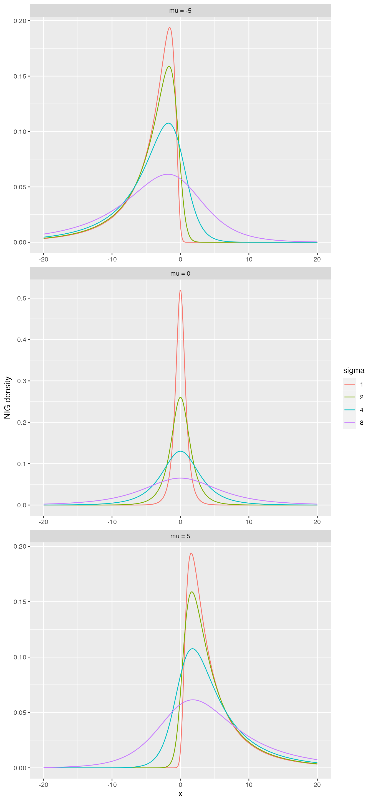

SPDE approach with non-Gaussian noise
SPDE-approach.RmdGaussian process in geostatistics
Gaussian process and random fields have a long history, covering different methods for representing spatial and spatial-temporal dependence structures. Gaussian fields (GF) have a dominant role in spatial statistics and especially in the traditional field of geostatistics.
A common geostatistical model is given by \[ Y_i = x(\mathbf{s}_i) + \varepsilon_i, \quad i=1,\ldots,N, \quad \varepsilon_i\sim N(0, \sigma^2),\] \[x(\mathbf{s}) \sim GP\left(\sum_{k=1}^{n_b} b_k(\mathbf{s})w_k, c(\mathbf{s},\mathbf{s}')\right),\] where \(N\) is the number of spatial observations, \(GP(m,c)\) stands for a Gaussian process with mean function \(m\) and covariance function \(c\), \(n_b\) is the number of basis functions, \(\{b_k(\cdot)\}_{k=1}^{n_b}\) are basis functions, \(w_k\) are weights to be estimated and \(c(\cdot,\cdot)\) is a covariance function.
A popular and flexible covariance function for random fields on \(\mathbb{R}^d\) is the Matérn covariance function:
\[ c(\mathbf{s}, \mathbf{s}') = \frac{\sigma^2}{\Gamma(\nu)2^{\nu-1}}(\kappa \|\mathbf{s}-\mathbf{s}'\|)^\nu K_\nu(\kappa\|\mathbf{s}-\mathbf{s}'\|), \]
where \(\Gamma(\cdot)\) is the Gamma function, \(K_\nu(\cdot)\) is the modified Bessel function of the second kind, \(\nu>0\) controls the correlation range and \(\sigma^2\) is the variance. Finally, \(\nu>0\) determines the smoothness of the field.
Usually, the model parameters are estimated via maximum likelihood estimation. The main drawback with this approach is that the computational time needed in order to perform statistical inference usually scales as \(\mathcal{O}(N^3)\).
The SPDE approach with Gaussian noise
It is well-known (Whittle, 1963) that a Gaussian process \(u(\mathbf{s})\) with Matérn covariance function solves the stochastic partial differential equation (SPDE)
\[\begin{equation}\label{spde} (\kappa^2 -\Delta)^\beta u = \mathcal{W}\quad \hbox{in } \mathcal{D}, \end{equation}\] where \(\Delta = \sum_{i=1}^d \frac{\partial^2}{\partial_{x_i^2}}\) is the Laplacian operator, \(\mathcal{W}\) is the Gaussian spatial white noise on \(\mathcal{D}=\mathbb{R}^d\), and \(4\beta = 2\nu + d\).
Inspired by this relation between Gaussian processes with Matérn covariance functions and solutions of the above SPDE, Lindgren et al. (2011) constructed computationally efficient Gaussian Markov random field approximations of \(u(\mathbf{s})\), where the domain \(\mathcal{D}\subsetneq \mathbb{R}^d\) is bounded and \(2\beta\in\mathbb{N}\). The approximate solutions of the SPDE are obtained through a finite element discretization.
Finite element approximation
We will now provide a brief description of the finite element method they used. To make the description simpler we will consider the nonfractional SPDE given by \[(\kappa^2 - \Delta) u(\mathbf{s}) = \mathcal{W}(\mathbf{s}),\] on some bounded domain \(\mathcal{D}\) in \(\mathbb{R}^d\). The Laplacian operator is augmented with boundary conditions. Usually one considers Dirichlet, in which the process is zero on the boundary of \(\mathcal{D}\), or Neumann, in which the directional derivarives of the process in the normal directions is zero on the boundary of \(\mathcal{D}\).
The equation is interpreted in the following weak sense: for every function \(\psi(\mathbf{s})\) from some suitable space of test functions, the following identity holds \[\langle \psi, (\kappa^2-\Delta)u\rangle_{\mathcal{D}} \stackrel{d}{=} \langle \psi, \mathcal{W}\rangle_{\mathcal{D}},\] where \(\stackrel{d}{=}\) means equality in distribution and \(\langle\cdot,\cdot\rangle_{\mathcal{D}}\) is the standard inner product in \(L_2(\mathcal{D})\), \(\langle f,g\rangle_{\mathcal{D}} = \int_\mathcal{D} f(\mathbf{s})g(\mathbf{s}) d\mathbf{s}.\)
The finite element method (FEM) consists on considering a finite dimensional space of test functions \(V_n\). In the Galerkin method, we consider \(V_n = {\rm span}\{\varphi_1,\ldots,\varphi_n\}\), where \(\varphi_i(\mathbf{s}), i=1,\ldots, n\) are piecewise linear basis functions obtained from a triangulation of \(\mathcal{D}\).
Then, we write approximate the solution \(u\) by \(u_n\), where \(u_n\) is written in terms of the basis functions as \[u_n(\mathbf{s}) = \sum_{i=1}^n w_i \varphi_i(\mathbf{s}).\]
We thus obtain the system of linear equations \[\left\langle \varphi_j, (\kappa^2 - \Delta)\left(\sum_{i=1}^n w_i\varphi_i\right)\right\rangle_{\mathcal{D}} \stackrel{d}{=} \langle \varphi_j, \mathcal{W}\rangle_{\mathcal{D}},\quad\hbox{for } j=1,\ldots,n.\]
The right hand side can be shown that \[(\langle \varphi_1, \mathcal{W}\rangle_{\mathcal{D}}, \ldots, \langle \varphi_n, \mathcal{W}\rangle_{\mathcal{D}}) \sim N(0, \mathbf{C}),\] where \(\mathbf{C}\) is an \(n\times n\) matrix with \((i,j)\)th entry given by \[\mathbf{C}_{i,j} = \int_{\mathcal{D}} \varphi_i(\mathbf{s})\varphi_j(\mathbf{s}) d\mathbf{s}.\] The matrix \(\mathbf{C}\) is known as the mass matrix in FEM theory.
By using Green’s first identity, the left hand side is \[ \begin{array}{ccl} \left\langle \varphi_j, (\kappa^2 - \Delta)\left(\sum_{i=1}^n w_i\varphi_i\right)\right\rangle_{\mathcal{D}} &=& \sum_{i=1}^n \langle \varphi_j, (\kappa^2 - \Delta)w_i\varphi_i\rangle_{\mathcal{D}}\\ &=& \sum_{i=1}^n (\kappa^2 \langle \varphi_j, \varphi_i\rangle_{\mathcal{D}} + \langle \nabla \varphi_j, \nabla \varphi_i\rangle_{\mathcal{D}}) w_i, \quad j=1,\ldots, n, \end{array} \] where the boundary terms vanish due to boundary conditions (for both Dirichlet and Neumann). We can then rewrite the last term in matrix form as \[(\kappa^2 \mathbf{C} + \mathbf{G})\mathbf{w},\] where \(\mathbf{w} = (w_1,\ldots,w_n)\) and \(\mathbf{G}\) is an \(n\times n\) matrix with \((i,j)\)th entry given by \[\mathbf{G}_{i,j} = \int_{\mathcal{D}} \nabla \varphi_i(\mathbf{s})\nabla\varphi_j(\mathbf{s})d\mathbf{s}.\] The matrix \(\mathbf{G}\) is known in FEM theory as stiffness matrix.
Putting everything together, we have that \[(\kappa^2 \mathbf{C} + \mathbf{G}) \mathbf{w} \sim N(0,\mathbf{C}).\] Therefore, \(\mathbf{w}\) is a centered Gaussian variable with precision matrix given by \[\mathbf{Q} = (\kappa^2 \mathbf{C}+\mathbf{G})^\top \mathbf{C}^{-1}(\kappa^2 \mathbf{C}+\mathbf{G}).\]
Computational advantages of the SPDE approach
For spatial problems, the computational cost usually scales as \(\mathcal{O}(n^{3/2})\), where \(n\) is the number of basis functions. This should be compared to the \(\mathcal{O}(N^3)\) of the Gaussian random field approach.
This implies in accurate approximations which drastically reduces the computational cost for sampling and inference.
The SPDE approach with non-Gaussian noise
Then we will describe how to generalize this approach with non-Gaussian noise. Our goal now is to describe the SPDE approach when the noise is non-Gaussian. The motivation for handling non-Gaussian noise comes from the fact that many features cannot not be handled by Gaussian noise. Some of these reasons are:
- Skewness;
- Heavier tails;
- Jumps in the sample paths;
- Asymmetries in the sample paths.
Non-Gaussian Matérn fields
The idea is to replace the Gaussian white noise \(\mathcal{W}\) in the SPDE by a non-Gaussian white noise \(\dot{\mathcal{M}}\): \[(\kappa^2 - \Delta)^\beta u = \dot{\mathcal{M}}.\] The solution \(u\) will have Matérn covariance function, but their marginal distributions will be non-Gaussian.
We will consider the same setup. More precisely, we consider \(V_n = {\rm span}\{\varphi_1,\ldots,\varphi_n\}\), where \(\varphi_i(\mathbf{s}), i=1,\ldots, n\) are piecewise linear basis functions obtained from a triangulation of \(\mathcal{D}\) and we approximate the solution \(u\) by \(u_n\), where \(u_n\) is written in terms of the basis functions as \[u_n(\mathbf{s}) = \sum_{i=1}^n w_i \varphi_i(\mathbf{s}).\] In the right-hand side we obtain a random vector \[\mathbf{f} = (\dot{\mathcal{M}}(\varphi_1),\ldots, \dot{\mathcal{M}}(\varphi_n)),\] where the functional \(\dot{\mathcal{M}}\) is given by \[\dot{\mathcal{M}}(\varphi_j) = \int_{\mathcal{D}} \varphi_j(\mathbf{s}) d\mathcal{M}(\mathbf{s}).\] By considering \(\mathcal{M}\) to be a type-G Lévy process, we obtain that \(\mathbf{f}\) has a joint distribution that is easy to handle.
We say that a Lévy process is of type G if its increments can be represented as location-scale mixtures: \[\gamma + \mu V + \sigma \sqrt{V}Z,\] where \(\gamma, \mu\) are parameters, \(Z\sim N(0,1)\) and is independent of \(V\), and \(V\) is a positive infinitely divisible random variable.
Therefore, given a vector \(\mathbf{V} = (V_1,\ldots,V_n)\) of independent stochastic variances (in our case, positive infinitely divisible random variables), we obtain that \[\mathbf{f}|\mathbf{V} \sim N(\gamma + \mu\mathbf{V}, \sigma^2{\rm diag}(\mathbf{V})).\] So, if we consider, for instance, the non-fractional and non-Gaussian SPDE \[(\kappa^2 - \Delta) u = \dot{\mathcal{M}},\] we obtain that the FEM weights \(\mathbf{w} = (w_1,\ldots,w_n)\) satisfy \[\mathbf{w}|\mathbf{V} \sim N(\mathbf{K}^{-1}(\gamma+\mu\mathbf{V}), \sigma^2\mathbf{K}^{-1}{\rm diag}(\mathbf{V})\mathbf{K}^{-1}),\] where \(\mathbf{K} = \kappa^2\mathbf{C}+\mathbf{G}\) is the discretization of the differential operator.
The NIG model
We will delve into more details now by considering, as example, the NIG model.
First, we say that a random variable \(V\) follows an inverse Gaussian distribution with parameters \(\eta_1\) and \(\eta_2\), denoted by \(V\sim IG(\eta_1,\eta_2)\) if it has probability density function (pdf) given by \[\pi(v) = \frac{\sqrt{\eta_2}}{\sqrt{2\pi v^3}} \exp\left\{-\frac{\eta_1}{2}v - \frac{\eta_2}{2v} + \sqrt{\eta_1\eta_2}\right\},\quad \eta_1,\eta_2>0.\] We can generate samples of inverse Gaussian distributions with parameters \(\eta_1\) and \(\eta_2\) by generating samples from the generalized inverse Gaussian distribution with parameters \(p=-1/2\), \(a=\eta_1\) and \(b=\eta_2\). We can use the rGIG function to generate samples from the generalized inverse Gaussian distribution.
If \(V\sim IG(\eta_1,\eta_2)\), then \(X = \gamma +\mu V + \sigma \sqrt{V}Z\), with \(Z\sim N(0,1)\), being independent of \(V\), then \(X\) follows a normal inverse Gaussian (NIG) distribution and has pdf \[\pi(x) = \frac{e^{\sqrt{\eta_1\eta_2}+\mu(x-\gamma)/\sigma^2}\sqrt{\eta_2\mu^2/\sigma^2+\eta_1\eta_2}}{\pi\sqrt{\eta_2\sigma^2+(x-\gamma)^2}} K_1\left(\sqrt{(\eta_2\sigma^2+(x-\gamma)^2)(\mu^2/\sigma^4+\eta_1/\sigma^2)}\right),\] where \(K_1\) is a modified Bessel function of the third kind. In this form, the NIG density is overparameterized, and we therefore set \(\eta_1=\eta_2=\eta\), which results in \(E(V)=1\). Thus, one have the parameters, \(\mu, \gamma\) and \(\eta\).
The NIG model thus assumes that the stochastic variance \(V_i\) follows an inverse Gaussian with parameters \(\eta\) and \(\eta h_i^2\), where \(h_i = \int_{\mathcal{D}} \varphi_i(\mathbf{s}) d\mathbf{s}.\)

Prediction
Our goal in this section is to perform prediction of the latent field \(u\) at locations where there are no observations. Usually, when doing such predictions, one provides mean and variance of the predictive distribution.
Let us assume we want to obtain predictions at locations \(\widetilde{\mathbf{s}}_1, \ldots, \widetilde{\mathbf{s}}_p \in \mathcal{D}\), where \(p\in \mathbb{N}\).
Notice that for \(j=1,\ldots,p\), \[u_n(\widetilde{\mathbf{s}}_j) = \sum_{i=1}^n w_i \varphi_i(\widetilde{\mathbf{s}}_j).\]
Therefore, if we let \(\mathbf{A}_p\) be the \(p\times n\) matrix whose \((i,j)\)th entry is given by \(\mathbf{A}_{p,ij} = \varphi_j(\widetilde{\mathbf{s}}_i)\), then \[(u_n(\widetilde{\mathbf{s}}_1),\ldots, u_n(\widetilde{\mathbf{s}}_p)) = \mathbf{A}_p\mathbf{w}.\] Thus, to perform prediction the desired means and variances are \[E[\mathbf{A}_p \mathbf{w} | \mathbf{Y}]\quad\hbox{and}\quad V[\mathbf{A}_p\mathbf{w}|\mathbf{Y}],\] where \(\mathbf{Y} = (Y_1,\ldots,Y_N).\)
Now, observe that the density of \(\mathbf{w}|\mathbf{Y}\) is not known. So, the mean and variance cannot be computed analytically.
There are two ways to circumvent that situation. Both of them are based on the fact that even though we do not know the density of \(\mathbf{w}|\mathbf{Y}\), we do know the density of \(\mathbf{V}|\mathbf{w},\mathbf{Y}\) and the density of \(\mathbf{w}|\mathbf{V},\mathbf{Y}\). Therefore we can use a Gibbs sampler to sample from \((\mathbf{w},\mathbf{V})|\mathbf{Y}\). From this we obtain, as a byproduct, marginal samples from \(\mathbf{w}|\mathbf{Y}\) and \(\mathbf{V}|\mathbf{Y}\).
We will now provide a brief presentation of the Gibbs sampler and then we will provide the approximations of the means and variances.
Gibbs sampler
In this section, we will briefly describe the Gibbs sampler algorithm we use.
Let \(\mathbf{A}\) be the \(N\times n\) matrix, whose \((i,j)\)th entry is given by \(\mathbf{A}_{ij} = \varphi_j(\mathbf{s}_i)\). Therefore, we have that \[(u_n(\mathbf{s}_1),\ldots,u_n(\mathbf{s}_N)) = \mathbf{A}\mathbf{w},\] so that \[\mathbf{Y} = \mathbf{A}\mathbf{w} + \boldsymbol{\varepsilon},\] where \(\boldsymbol{\varepsilon} = (\varepsilon_1,\ldots,\varepsilon_N)\) is the measurement noise. Here we assumen \(\varepsilon\) is Gaussian noise.
Therefore, under this assumption we have that \[\mathbf{Y}|\mathbf{w} \sim N(\mathbf{A}\mathbf{w}, \sigma_\varepsilon^{2} \mathbf{I}).\] Also recall that \[\mathbf{w}|\mathbf{V} \sim N(\mathbf{K}^{-1}(-\mu \mathbf{h}+\mu\mathbf{V}), \sigma^2\mathbf{K}^{-1}{\rm diag}(\mathbf{V})\mathbf{K}^{-1}).\] Let \[\mathbf{m} = \mathbf{K}^{-1}(-\mu \mathbf{h}+\mu\mathbf{V})\quad \hbox{and}\quad \mathbf{Q} = \frac{1}{\sigma^2}\mathbf{K}{\rm diag}(\mathbf{V})^{-1}\mathbf{K}.\]
It thus follows (see, also, Wallin and Bolin (2015) or Asar et al. (2020)) that \[\mathbf{w} | \mathbf{V}, \mathbf{Y} \sim N\big(\widetilde{\mathbf{m}}, \widetilde{\mathbf{Q}}^{-1}),\] where \[\widetilde{\mathbf{Q}} = \mathbf{Q} + \sigma_\varepsilon^{-2} \mathbf{A}^\top\mathbf{A}\quad\hbox{and}\quad \widetilde{\mathbf{m}} = \widetilde{\mathbf{Q}}^{-1}\big(\mathbf{Q}\mathbf{m}+\sigma_\varepsilon^{-2}\mathbf{A}^\top\mathbf{Y}\big).\]
To compute the conditional distribution \(\mathbf{V}|\mathbf{w}, \mathbf{Y}\) one can see from Wallin and Bolin (2015), pp. 879, that \(V_1,\ldots,V_n\) are conditionally independent given \(\mathbf{w}\). Furthermore, we also have from Proposition 1 from Asar et al. (2020)) that if \(V\sim GIG(p,a,b)\), where \(GIG\) stands for the generalized inverse Gaussian distribution with parameters \(p, a\) and \(b\), then, for every \(j=1,\ldots,n\), \[V_j|\mathbf{w},\mathbf{Y} \sim GIG\Bigg(p-0.5, a+\frac{\mu^2}{\sigma^2}, b + \frac{(\mathbf{K}\mathbf{w}+\mathbf{h}\mu)_j^2}{\sigma^2}\Bigg).\]
We are now in a position to use the Gibbs sampling algorithm:
- Provide initial values \(\mathbf{V}^{(0)}\);
- Sample \(\mathbf{w}^{(1)} | \mathbf{V}^{(0)},\mathbf{Y}\);
- Sample \(\mathbf{V}^{(1)} | \mathbf{w}^{(1)}, \mathbf{Y}\);
- Continue by sequentially sampling \(\mathbf{w}^{(i)}|\mathbf{V}^{(i-1)},\mathbf{Y}\), and then \(\mathbf{V}^{(i)}|\mathbf{w}^{(i)}, \mathbf{Y}\) for \(i=1,\ldots,k\).
One should stop when equilibrium is reached. To obtain evidence that equilibrium has been achieved, it is best to consider more than one chain, starting from different locations, and see if they mixed well. It might also be useful to see autocorrelation plots.
Depending on the starting values, one might consider to do burn-in samples, that is, one runs a chain for some iterations, then saves the last position, throw away the rest of the samples, and use that as starting values.
It is important to observe that the samples \(\{\mathbf{w}^{(i)},\mathbf{V}^{(i)}\}_{i=1}^k\) will not be independent. However, under very general assumptions, the Gibbs sampler provides samples satisfying the law of large numbers for functionals of the sample. Therefore, one can use these samples to compute means and variances.
Estimation
In ngme2, we use maximum likelihood estimation via preconditioned stochastic gradient descent. The gradient is approximated by
Standard MC approximation of the gradient
In our context, we assume \(\mathbf{w}\) and \(\mathbf{V}\) to be hidden. Therefore, we may use Fisher’s identity (Fisher, 1925) to the latent variable \((\mathbf{V},\mathbf{w})\) to obtain that \[\nabla_{\boldsymbol{\theta}} L({\boldsymbol{\theta}}; \mathbf{Y}) = E_{\mathbf{V},\mathbf{w}}[\nabla_{\boldsymbol{\theta}} L({\boldsymbol{\theta}}; \mathbf{Y}, \mathbf{V}, \mathbf{w})|\mathbf{Y}].\]
Thus, the idea here is to use both samples of \(\mathbf{V}\) and \(\mathbf{w}\) obtained from the Gibbs sampler to approximate the gradient as \[\nabla_{{\boldsymbol{\theta}}}L({\boldsymbol{\theta}};\mathbf{Y}) \approx \frac{1}{k} \sum_{j=1}^k \nabla_{{\boldsymbol{\theta}}} L({\boldsymbol{\theta}};\mathbf{Y},\mathbf{V}^{(j)}, \mathbf{w}^{(j)}).\] To this end, we will compute the gradients \(\nabla_{{\boldsymbol{\theta}}} L({\boldsymbol{\theta}};\mathbf{Y},\mathbf{V}, \mathbf{w})\). We have that \[\mathbf{Y}|\mathbf{w} \sim N(\mathbf{A}\mathbf{w}, \sigma_\varepsilon^{-2} \mathbf{I}),\] \[\mathbf{w}|\mathbf{V} \sim N(\mathbf{K}^{-1}(-\mu \mathbf{h}+\mu\mathbf{V}), \sigma^2 \mathbf{K}^{-1}{\rm diag}(\mathbf{V})\mathbf{K}^{-1})\] and \(\mathbf{V}\) follows a GIG distribution such that for every \(i\), \(E[V_i]=h_i\). Therefore, we have that \[\begin{array}{ccl} L((\mu,\sigma_\varepsilon); \mathbf{w}, \mathbf{V},\mathbf{Y}) &=& -n\log(\sigma_\varepsilon)-0.5\sigma_\varepsilon^{-2} (\mathbf{Y} - \mathbf{A}\mathbf{K}^{-1}(-\mu \mathbf{h}+\mu\mathbf{V}))\\ &-&0.5\sigma_\varepsilon^{-2}(\mathbf{A}(\mathbf{w}-\mathbf{m})^\top{\rm diag} (1/(\sigma^2 V_i)) (\mathbf{Y} - \mathbf{A}\mathbf{K}^{-1}(-\mu \mathbf{h}+\mu\mathbf{V})-\mathbf{A}(\mathbf{w}-\mathbf{m})) + const, \end{array}\] where \(const\) does not depend on \((\mu,\sigma)\).
References
Lindgren, F., Rue, H., and Lindstrom, J. (2011). An explicit link between Gaussian fields and Gaussian Markov random fields: the stochastic partial differential equation approach. Journal of the Royal Statistical Society: Series B (Statistical Methodology), 73(4):423–498.
Whittle, P. (1963). Stochastic-processes in several dimensions. Bulletin of the International Statistical Institute, 40(2):974–994.
Wallin, J., Bollin, D. (2015). Geostatistical Modelling Using Non-Gaussian Matérn Fields. Scandinavian Journal of Statistics. 42(3):872-890.